library(tidyverse)
library(patchwork)
library(flextable)
library(knitr)2 Regressão Linear Simples
Pacotes, funções e base de dados utilizadas no capítulo
Pacotes:
Um modelo de regressão linear nos permite verificar se há uma relação funcional entre variáveis quantitativas. Nesta relação, uma variável é denominada dependente (ou variável resposta - \(Y\)) e as demais independentes (ou variáveis preditoras - \(X\)). Portanto, ao ajustar um modelo de regressão linear, estamos assumindo que existe uma relação estatística de dependencia de \(Y\) como função das variáveis preditoras em \(X\). No modelo de regressão linear simples temos somente uma variável preditora e sua relação funcional com \(Y\) é dada por:
\[Y_i = \beta_0 + \beta_1X_i + \epsilon_i\]
Code
st = read_csv("datasets/HubbardBrook_wide.csv")
st = st %>%
rename(FlowD = WS2_Flow_Defosrested, FlowR = WS3_Flow_reference,
RainD = WS2_precipitation, RainR = WS3_precipitation) %>%
mutate(FlowD = FlowD/100, FlowR = FlowR/100,
RainD = RainD/10, RainR = RainR/10) %>%
.[-31,]Considere novamente os dados sobre pluviosidade anual e vazão em uma bacia hidrográfica americada, medidos entre os anos de 1958 e 1987 (disponível em: tiee.esa.org). Vamos avaliar a relação entre a vazão na bacia e os volumes de chuva.
Year | FlowD | FlowR | Diference | RainD | RainR |
|---|---|---|---|---|---|
1,958 | 645.15 | 567.36 | 7,779 | 1,167.5 | 1,161.0 |
1,959 | 1,012.05 | 918.23 | 9,382 | 1,482.6 | 1,479.1 |
1,960 | 825.22 | 752.06 | 7,316 | 1,321.3 | 1,325.3 |
1,961 | 470.05 | 436.25 | 3,380 | 979.7 | 978.9 |
1,962 | 777.31 | 699.29 | 7,802 | 1,232.2 | 1,230.6 |
1,963 | 773.64 | 662.58 | 11,106 | 1,138.6 | 1,151.7 |
1,964 | 712.15 | 630.45 | 8,170 | 1,175.4 | 1,175.2 |
1,965 | 598.85 | 546.69 | 5,216 | 1,115.2 | 1,120.6 |
1,966 | 1,189.34 | 726.73 | 46,261 | 1,222.3 | 1,223.2 |
1,967 | 1,131.85 | 780.76 | 35,109 | 1,315.1 | 1,296.8 |
1,968 | 1,056.54 | 762.84 | 29,370 | 1,268.2 | 1,285.2 |
1,969 | 1,347.61 | 998.68 | 34,893 | 1,368.5 | 1,403.5 |
1,970 | 905.47 | 697.53 | 20,794 | 1,184.1 | 1,201.5 |
1,971 | 800.56 | 676.19 | 12,437 | 1,164.2 | 1,173.4 |
1,972 | 1,005.90 | 885.91 | 11,999 | 1,431.3 | 1,424.0 |
1,973 | 1,585.73 | 1,396.43 | 18,930 | 1,804.0 | 1,792.8 |
1,974 | 998.20 | 890.45 | 10,775 | 1,406.8 | 1,408.9 |
1,975 | 1,086.33 | 939.52 | 14,681 | 1,422.4 | 1,448.6 |
1,976 | 1,142.59 | 1,022.06 | 12,053 | 1,511.4 | 1,516.0 |
1,977 | 966.25 | 843.75 | 12,250 | 1,382.7 | 1,388.2 |
1,978 | 722.04 | 613.79 | 10,825 | 1,087.9 | 1,085.7 |
1,979 | 1,136.17 | 1,036.93 | 9,924 | 1,417.0 | 1,432.7 |
1,980 | 585.22 | 548.28 | 3,694 | 1,087.9 | 1,101.1 |
1,981 | 1,129.09 | 1,093.91 | 3,518 | 1,631.5 | 1,664.9 |
1,982 | 802.73 | 756.12 | 4,661 | 1,088.2 | 1,114.4 |
1,983 | 917.13 | 889.35 | 2,778 | 1,436.6 | 1,451.8 |
1,984 | 1,000.54 | 970.65 | 2,989 | 1,396.8 | 1,403.5 |
1,985 | 634.76 | 627.84 | 692 | 1,128.4 | 1,137.2 |
1,986 | 987.99 | 960.94 | 2,705 | 1,364.0 | 1,372.3 |
1,987 | 790.47 | 797.09 | -662 | 1,222.1 | 1,234.6 |
É razoável supor que em anos de mais chuva, seriam esperadas maiores vazões e que anos mais secos resultassem menores volumes de vazão. Para verificar esta suposição vamos fazer um gráfico de dispersão entre vazão e chuva.
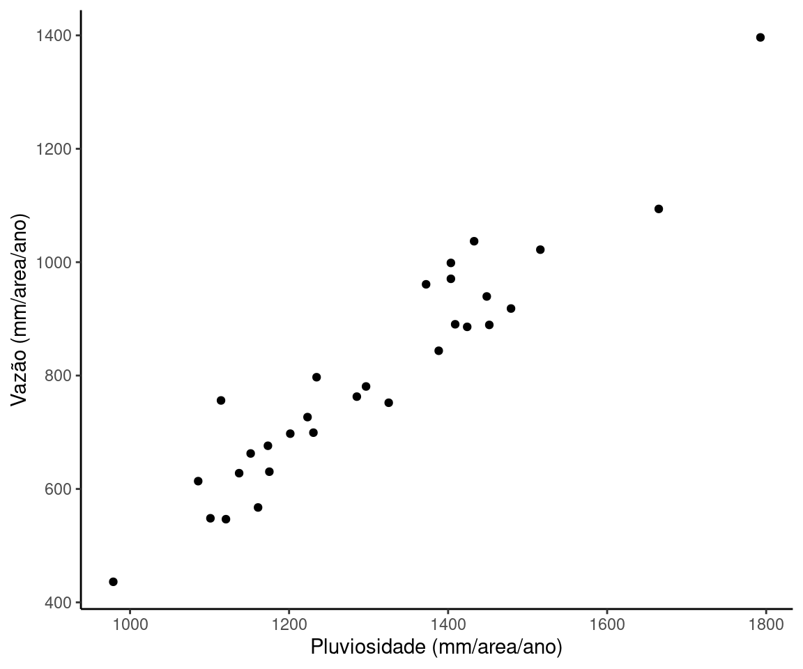
O gráfico sugere que a suposição faz sentido. Volumes baixos de chuva estão associados a volumes baixos de vazão e vice versa. O gráfico sugrere ainda que a relação funcional é linear. Nestas condições, faz sentido tentar modelar a relação entre estas variáveis por meio de um modelo de regressão linear simples.
Ao ajustar um modelo de regressão, vemos que a linha em azul é a que melhor descreve a relação linear entre as variáveis.
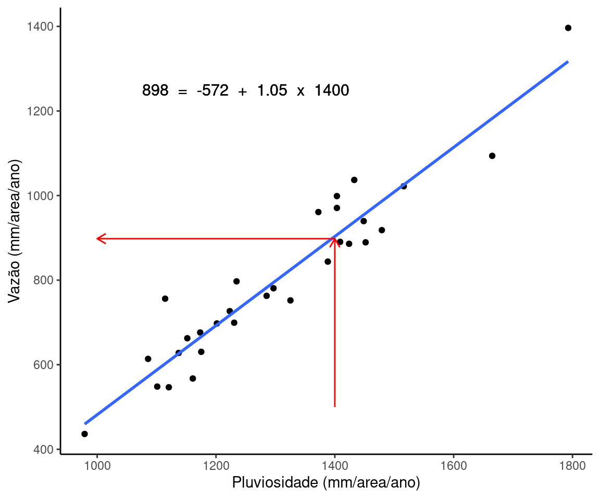
Esta linha nos permite obter uma estimativa sobre a vazão esperada (\(Y\)) para qualquer dado volume de chuva (\(X\)). Neste exemplo, a equação que melhor associa vazão e chuva é:
\[Y_i = -571.98 + 1.05 X_i\]
O valor de \(\beta_1 = 1.05\) nos diz que para um aumento de 1 mm/area/ano de chuva, a vazão aumentará 1.05 mm/area/ano. \(\beta_1\) é conhecido como coeficiente de inclinação da reta e nos fornece magnitude da variação em \(Y\) para um aumento de 1 unidade em \(X\).
Esta equação prevê por exemplo, que para um volume de chuva igual a 1400 mm/area/ano a vazão na bacia será de 898 mm/area/ano. Faça as contas para conferir.
\[898.02 = -571.98 + 1.05 \times 1400\]
A reta descreve portanto os valores preditos de vazão para cada nível de chuva.
2.1 Modelo geral de regressão
A estrutura de um modelo de regressão é dada por:
\[Y_i = f(X_i, \beta) + \epsilon_i\]
onde \(f(X_i, \beta)\) representa a parte determinística e \(\epsilon\) a parte estocástica. O sulfixo i nos diz que esta expressão é dada para cada par de observação \((Y,X)\).
2.1.1 Porção determinística
A porção determinística é um modelo matemático que descreve a relação funcional entre \(X\) e \(Y\). Os parâmetros \(\beta\)’s determinam a intensidade do efeito de \(X\) sobre \(Y\). Na regressão linear simples temos somente uma variável \(X\), e a relação funcional é dada pela equação da reta. No modelo de regressão linear múltipla existe mais de uma variável \(X\). Finalmente, nos modelos de regressão não-lineares a relação funcional pode ser representada por outros modelos matemáticos (ex. função potência \(Y = \beta_0X^{\beta_1}\)).
Na regressão linear simples, o parâmetro \(\beta_1\) é geralmente o de maior interesse. Este parâmetro nos dirá se a relação será crescente (\(\beta_1 > 0\)), decrescente (\(\beta_1 < 0\)) ou nula (\(\beta_1 = 0\)). \(\beta_0\) é o \(\textbf{intercepto}\) e expressa o ponto em \(Y\) em que a reta cruza o eixo das ordenadas.
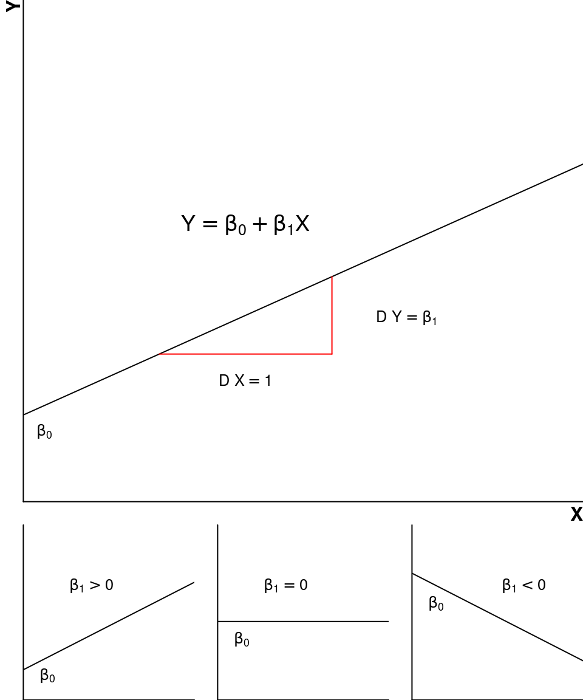
2.1.2 Porção estocástica
A porção estocástica, é representada pelo resíduo ou erro. A cada observação \(Y_i\) está associado um valor de resíduo correspondente (\(\epsilon_i\)), dado pela distância vertical entre \(Y_i\) e o valor predito \(\hat{Y_i}\) sobre a reta de regressão.
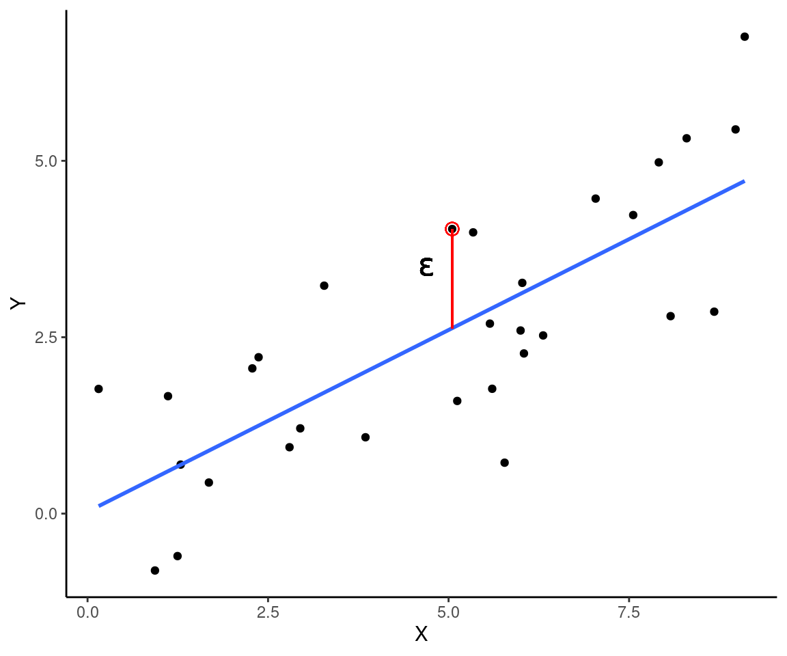
No modelo de regressão linear que veremos aqui, os resídos são uma variável aleatória prevenientes de uma distribuição normal de probabilidades com média \(\mu = 0\) e variância \(\sigma^2\) constante ao longo da reta de regressão, \(N(0, \sigma^2)\).
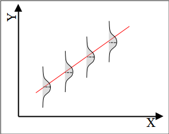
2.2 Ajuste dos dados ao modelo de regressão
O ajuste de dados observados a um modelo de regressão requer a obtenção de estimativas para \(\beta_0\), \(\beta_1\) e \(\sigma^2\), denotadas respectivamente por \(\hat{\beta_0}\), \(\hat{\beta_1}\) e \(\hat{\sigma}^2\). Note que o símbolo \(\hat{}\) significa que estamos falando de estimativas obtidas a partir de dados amostrais e não dos parâmetros populacionais.
Ao obter estas estimativas, podemos encontrar valores ajustados de \(Y\) para um dados valor de \(X\). Os valores ajustados de \(Y\) são denotados por \(\hat{Y}\).
\[\hat{Y_i} = \hat{\beta_0} + \hat{\beta_1}X_i\]
2.2.1 Método dos mínimos quadrados
O Método dos Mínimos Quadrados (\(MMQ\)) é uma das formas disponíveis para calcularmos \(\hat{\beta_0}\), \(\hat{\beta_1}\) e \(\hat{\sigma}^2\). O \(MMQ\) envolve encontrar a combinação de \(\hat{\beta_0}\) e \(\hat{\beta_1}\) que minimiza a Soma dos Quadrados dos Resíduos (\(SQ_{Resíduo}\)), ou seja, que minimizam a quantia:
\[SQ_{Resíduo} = \sum{(Y_i-\hat{Y_ i})^2} = \sum{(Y_i-(\hat{\beta_0} + \hat{\beta_1}X_i))^2}\]
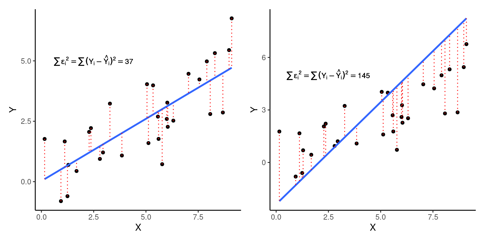
Nas figuras acima, a linha da esquerda (\(SQ_{Resíduo} = \sum{\epsilon_i^2} = 37\)) está claramente melhor ajustada à nuvem de pontos, o que se expressa em um menor somatório dos quadrados dos resíduos (\(SQ_{Resíduo} = \sum{\epsilon_i^2} = 37\)) quando comparado com o ajuste da figura à direita (\(SQ_{Resíduo} = \sum{\epsilon_i^2} = 145\)).
2.2.2 Variâncias, covariâncias e coeficientes da regressão
Para estimarmos os coeficientes da regressão \(\beta_0\) e \(\beta_1\) devemos retomar o conceito de variância amostral e introduzir o conceito de covariância amostral.
A variância amostral de \(Y\) por exemplo, pode ser obtida subtraindo cada observação em \(Y\) de sua média (\(\overline{Y}\)) e elevando esta subtração ao quadrado \((Y_i - \overline{Y})^2\). Ao somar para todos os valores de \(Y_i\) teremos o somatório dos quadrados de \(Y\) (\(SQ_Y\)).
\[SQ_Y = \sum_{i-1}^{n} (Y_i - \overline{Y})^2 = \sum_{i-1}^{n}(Y_i - \overline{Y}) (Y_i - \overline{Y})\]
Dividindo \(SQ_Y\) por \(n-1\) teremos a variância amostral de \(Y\) (\(s^2_Y\)).
\[s^2_Y = \frac{\sum_{i-1}^{n} (Y_i - \overline{Y})^2}{n-1}\]
Adotando o mesmo procedimento para \(X\), podemos calcular o somatório dos quadrados de \(X\) (\(SQ_X\)).
\[SQ_X = \sum_{i-1}^{n} (X_i - \overline{X})^2 = \sum_{i-1}^{n}(X_i - \overline{X}) (X_i - \overline{X})\]
e a variância amostral de \(X\) (\(s^2_X\)).
\[s^2_X = \frac{\sum_{i-1}^{n} (X_i - \overline{X})^2}{n-1}\]
Combinando as duas ideias, teremos o produto cruzado de \(Y\) e \(X\) (\(SQ_{YX}\))
\[SQ_{YX} = \sum_{i-1}^{n}(Y_i - \overline{Y}) (X_i - \overline{X})\]
e a covariância amostral entre \(Y\) e \(X\) (\(s_{YX}\)).
\[s_{YX} = \frac{\sum_{i-1}^{n}(Y_i - \overline{Y}) (X_i - \overline{X})}{n-1}\]
O estimador \(\hat{\beta_1}\) nada mais é que a covariância entre \(Y\) e \(X\) padronizada pela variância de \(X\).
\[\hat{\beta_1} = \frac{s_{YX}}{s^2_X} = \frac{\frac{SQ_{XY}}{n-1}}{\frac{SQ_X}{n-1}} = \frac{SQ_{XY}}{SQ_X} = \frac{\sum{(Y_i - \overline{Y})(X_i - \overline{X})}}{\sum{(X_i - \overline{X})^2}}\]
\[\hat{\beta_1} = \frac{\sum{(Y_i - \overline{Y})(X_i - \overline{X})}}{\sum{(X_i - \overline{X})^2}}\]
Após encontrar \(\hat{\beta_1}\), podemos calcular \(\hat{\beta_0}\) sabendo que a melhor reta de regressão passará necessariamente pelo ponto médio de \(X\) e de \(Y\). Deste modo temos:
\[\hat{\beta_0} = \overline{Y} - \hat{\beta_1}\overline{X}\]
Calculados \(\hat{\beta_1}\) e \(\hat{\beta_0}\), podemos encontrar os valores ajustados de \(Y\) para cada valor de \(X\) que serão utilizados para construir a reta de regressão. \(\hat{Y_i}\) será dado por:
\[\hat{Y_i} = \hat{\beta_0} + \hat{\beta_1}X_i\]
Por fim, a variância residual \(s^2\) é dada por:
\[s^2 = QM_{Resíduo} = \frac{SQ_{Resíduo}}{n-2} = \frac{\sum{(Y_i-\hat{Y_ i})^2}}{n-2}\]
2.2.3 Exemplo de ajuste ao modelo de regressão
rk = read_csv("datasets/RIKZ.csv")
rks = rk %>%
.[seq(3,43,by = 5),]Considere a tabela abaixo com os dados de riqueza da macro-fauna praial (número de espécies) e de um índice de exposição às ondas (NAP). Os dados foram obtidos em 2002 na costa da Holanda em nove praias (Zuur et al. 2009). Valores negativos de NAP se referem a locais mais expostos e valores positivos a locais menos expostos à ação das ondas.
rks %>%
select(Richness, NAP) %>%
flextable()Richness | NAP |
|---|---|
13 | -1.336 |
8 | 0.635 |
4 | -0.201 |
3 | 0.460 |
6 | 0.729 |
1 | 2.222 |
1 | 1.375 |
7 | -1.005 |
3 | -0.002 |
O gráfico de dispersão sugere uma relação negativa e possivelmente linear, em que a riqueza de espécies diminui com o aumento no grau de exposição. Vamos ajustar um modelo de regressão a estes pontos calculando \(\hat{\beta_0}\), \(\hat{\beta_1}\) e \(\hat{\sigma}^2\).
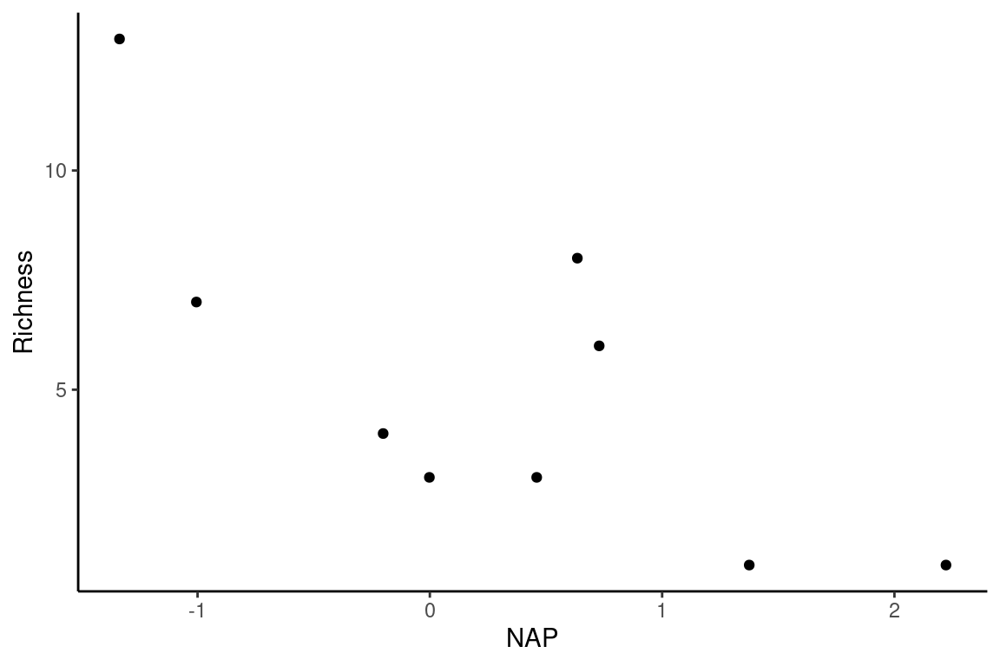
Os passos intermediários envolvem o cálculo do somatórios dos quadrados de X:
\[SQ_X = \sum{(X_i - \overline{X})^2}\]
de Y:
\[SQ_Y = \sum{(Y_i - \overline{Y})^2}\]
e do somatório dos produtos cruzados de X e Y:
\[SQ_{XY} = \sum{(X_i - \overline{X}) (Y_i - \overline{Y})}\]
Estes passos são descritos na tabela a seguir.
| Richness | NAP | \((X_i - \overline{X})\) | \((Y_i - \overline{Y})\) | \((X_i - \overline{X})^2\) | \((Y_i - \overline{Y})^2\) | \((X_i - \overline{X})(Y_i - \overline{Y})\) |
|---|---|---|---|---|---|---|
| 13 | -1.34 | -1.66 | 7.89 | 2.74 | 62.23 | -13.06 |
| 8 | 0.64 | 0.32 | 2.89 | 0.10 | 8.35 | 0.91 |
| 4 | -0.20 | -0.52 | -1.11 | 0.27 | 1.23 | 0.58 |
| 3 | 0.46 | 0.14 | -2.11 | 0.02 | 4.46 | -0.30 |
| 6 | 0.73 | 0.41 | 0.89 | 0.17 | 0.79 | 0.36 |
| 1 | 2.22 | 1.90 | -4.11 | 3.62 | 16.90 | -7.82 |
| 1 | 1.38 | 1.06 | -4.11 | 1.11 | 16.90 | -4.34 |
| 7 | -1.00 | -1.32 | 1.89 | 1.75 | 3.57 | -2.50 |
| 3 | 0.00 | -0.32 | -2.11 | 0.10 | 4.46 | 0.68 |
Após os cálculos, os valores estimados são:
\[\hat{\beta_1} = \frac{\sum{(X_i - \overline{X})(Y_i - \overline{Y})}}{\sum{(X_i - \overline{X})^2}} = \frac{-25.49}{9.88} = -2.58\]
\[\hat{\beta_0} = \overline{Y} - \hat{\beta_1}\overline{X} = 5.11 -2.58 \times 0.32 = 5.94\]
\[\hat{\sigma}^2 = QM_{Resíduo} = \frac{SQ_{Resíduo}}{n-2} = \frac{\sum{(Y_i-\hat{Y_ i})^2}}{n-2} = \frac{53.11}{7} = 7.59\]
De modo que a melhor reta de regressão é dada por:
\[Richness = 5.94 -2.58 \times NAP\]
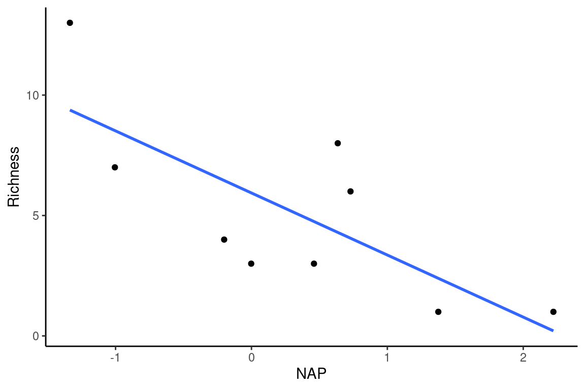
2.3 Testes de hipóteses na regressão linear simples
Até o momento, apresentamos uma discussão sobre o método para calcular os estimadores \(\hat{\beta_0}\), \(\hat{\beta_1}\) e \(\hat{\sigma}\). Entretanto, como nossas observações provêm de amostras, estas estimativas estão sujeitas à variação inerente às observações de que dispomos e certamente não serão iguais ao valor da população estatística. Devemos portanto, entender quais evidências estes estimadores nos fornecem para a existência de um efeito de \(X\) sobre \(Y\), ou seja, para rejeitarmos a hipótese nula em favor de \(H_A\).
2.3.1 Teste sobre \(\beta_1\)
Na regressão linear simples, o efeito de \(X\) sobre \(Y\) depende do valor de \(\beta_1\)
\(Y_i = \beta + \beta_1X_i + \epsilon_i\)
A não existência de um efeito implica em \(\beta_1 = 0\) e consequentemente:
\(Y_i = \beta_0 + 0 \times X_i + \epsilon_i\) \(\rightarrow\) \(Y = \beta_0 + \epsilon_i\)
Portanto, as hipóteses nula e alternativa seriam:
\(H_0: \beta_1 = 0\)
\(H_A: \beta_1 \ne 0\)
Segundo \(H_0\), a inclinação da reta \(populacional\) não é diferente de zero e o valor estimado \(\hat{\beta_1}\) ocorreu puramente ao acaso, como efeito da variação amostral. Para testar esta hipótese, utilizamos a distribuição de t de modo que:
\[t = \frac{\hat{\beta_1} - \beta_1}{s_{\hat{\beta_1}}}\]
Como segundo \(H_0\), \(\beta_1 = 0\) a expressão fica:
\[t = \frac{\hat{\beta_1} - 0}{s_{\hat{\beta_1}}} = \frac{\hat{\beta_1}}{s_{\hat{\beta_1}}}\]
\(s_{\hat{\beta_1}}\) é o erro padrão de \(\beta_1\) calculado por:
\[s_{\hat{\beta_1}} = \sqrt{\frac{\hat{\sigma}^2}{\sum{(X_i-\overline{X})^2}}}\]
No exemplo sobre a fauna praial estamos interessados em testar a hipótese de que a riqueza de espécies esteja associada ao grau de exposição às ondas. Em regressão linear, esta hipótese pode ser expressa por:
\[t = \frac{\hat{\beta_1}}{s_{\hat{\beta_1}}} = \frac{-2.58}{0.88} = -2.944\]
Que na distribuição de t fica:
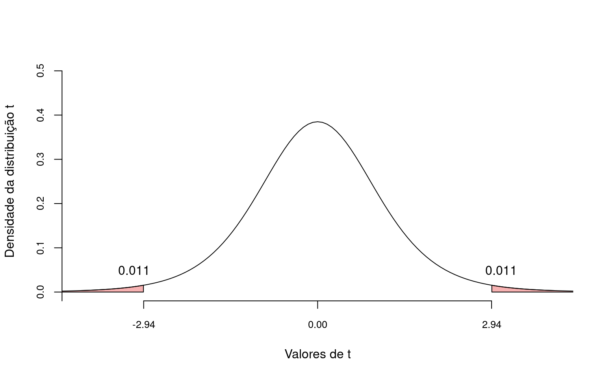
Se nosso nível de significancia \(\alpha = 0.05\), então a probabilidade \(p = 0.011 + 0.011 = 0.022\) indica que devemos rejeitar \(H_0\) e aceitar que existe uma relação entre Riqueza de espécies e NAP.
2.3.2 Análise de variância da regressão
Como já dizemos, a estrutura de um modelo de regressão é dada por um componente sistemático expresso como função de \(X\) (\(\beta_0 + \beta_1X_i\)) e um componente aleatório expresso pelos resíduos do modelo (\(\epsilon_i\)). A variação total em \(Y\) no modelo de regressão portanto, pode ser atribuída a ambos os efeitos de \(X\) e do resíduo. Estas quantias de variação podem mensuradas pelos somatório dos quadrados abaixo.
Soma dos quadrados totais:
\(SQ_Y = \sum{(Y_i - \overline{Y})^2}\)
Soma dos quadrados da regressão:
\(SQ_{Regressão}= \sum{(\hat{Y_i} - \overline{Y})^2}\)
E soma dos quadrados do resíduo:
\(SQ_{Resíduo}= \sum{(Y_i - \hat{Y_i})^2}\)
Pode-se mostrar ainda que vale a expressão:
\[SQ_Y = SQ_{Regressão} + SQ_{Resíduo}\] A decomposição destas quantias é conhecida partição das somas dos quadrados e nos permitem comparar a influência de \(X\) com a influência do puro acaso sobre a variabilidade em \(Y\). Se todos os pontos estiverem perfeitamente sobre a reta, então toda a variação em \(Y\) seria atribuída à influência de \(X\). Por outro lado, à medida que aumenta a distância média dos pontos acima e abaixo da curva, aumenta a parcela atribuída ao acaso.
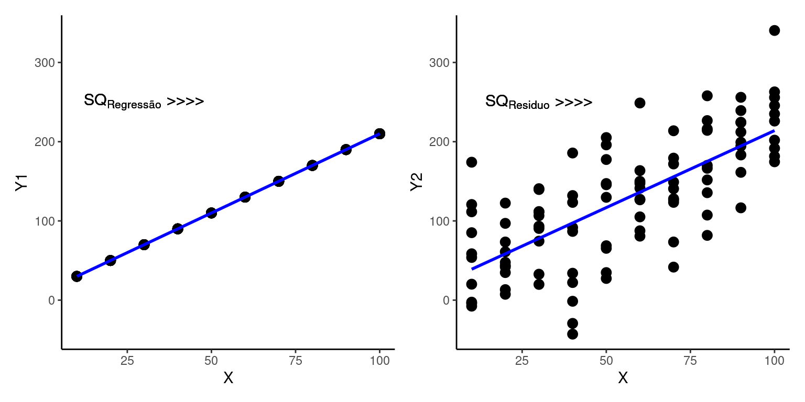
Estes componentes de variação podem ser organizados em uma Tabela de Análise de Variância (ANOVA). \(n\) se refere ao número de amostras.
| Fonte de variação | SQ | gl | QM | F | p |
|---|---|---|---|---|---|
| Regressão | \(SQ_{Regressão}\) | \(gl_{Regressão}\) | \(QM_{Regressão} = \frac{SQ_{Regressão}}{gl_{Regressão}}\) | \(\frac{QM_{Regressão}}{QM_{Resíduo}}\) | Probabilidade associada à cauda da distribuição F |
| Resíduo | \(SQ_{Resíduo}\) | \(gl_{Resíduo}\) | \(QM_{Resíduo} = \frac{SQ_{Resíduo}}{gl_{Resíduo}}\) | ||
| Total | \(SQ_{Y}\) | \(gl_{Y}\) | \(QM_{Y} = \frac{SQ_{Y}}{gl_{Y}}\) |
As coluna \(gl\) se refer aos graus de liberdade nos modelo de regressão, a semelhança do que discutimos para o teste t de Student. A coluna QM (Quadrado médio) apresenta os estimadores de variância da regressão (\(QM_{Regressão}\)), do resíduo (\(QM_{Resíduo}\)) e total (\(QM_{Y}\)).
2.3.2.1 A distribuição F
O valor de \(F\) na tabela se refere a distribuição de probabilidade F. Esta distribuição de probabilidades é esperada para a razão entre duas variâncias amostrais. No caso da regressão linear, estas são a variância da regressão (\(QM_{Regressão}\) no numerador) e a variância residual (\(QM_{Resíduo}\) no denominador). Diferente da distribuiçao t, a distribuição F tem um formato assimétrico, sendo que o grau de assimetria depende dos graus de liberdade do numerador e do denominador. O valor de \(p\) na tabela se refere à área sob a distribuição F, acima do valor de \(F\) calculado. Na ANOVA da regressão, um valor de \(p < \alpha\) nos leva a rejeitar a hipótese nula e assumir que a variável \(X\) exerce algum efeito sobre \(Y\).
O símbolo \(F\) foi dado em homenagem a Ronald Aylmer Fisher o estatístico e geneticista Britânico do início do séc. XX, que entre inúmeras outras contribuições, desenvolveu a Análise de Variância. Fisher é descrito como “a genius who almost single-handedly created the foundations for modern statistical science” (Halt 1998) e como “the single most important figure in 20th century statistics” (Efron 1998). Ver Ronald Aylmer Fisher.
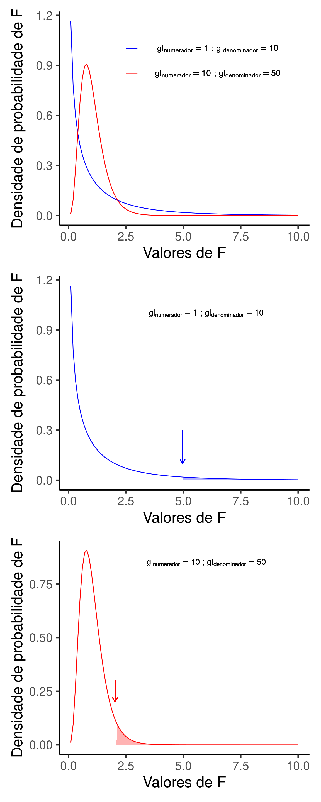
Os resultados da ANOVA para os dados da fauna praial nos dá os seguintes valores. Confira os cálculos.
| Fonte de variação | SQ | gl | QM | F | p |
|---|---|---|---|---|---|
| Regressão | 65.68 | 1 | 65.68 | 8.64 | 0.022 |
| Resíduo | 53.21 | 7 | 7.60 | NA | NA |
| Total | 118.89 | 8 | 14.86 | NA | NA |
O valor de \(p = 0.022\) abaixo do nível de significância \(\alpha = 0.05\), nos leva a rejeitar a hipótese nula em favor da alternativa, concluindo que o índice de exposição às ondas interfere sobre a riqueza da macro-fauna. O valor de \(p\) foi identico ao obtido no teste de hipóteses de \(\beta_1\). No modelo de regressão linear simples isto é necessariamente verdadeiro, pois toda a variação associada à regressão é devida ao efeito do coeficiente \(\beta_1\). Por outro lado, nos modelos de regressão múltipla, em que temos:
\[Y_i = \beta_0 + \beta_1X_{i1} + \beta_1X_{i2} + \cdots + \beta_mX_{im} + \epsilon_i\]
esta relação não é mais observada, pois existem múltiplos coeficientes agindo sobre a variação em \(Y\).
2.4 Coeficiente de determinação \(R^2\)
Uma vez que toda a variação observada em Y pode ser alocada aos efeitos da reta de regressão e e do resíduo podemos fazer a seguinte questão:
Qual parcela da variação na Riqueza é explicada exclusivamente pelo modelo de regressão?
Esta pergunta pode ser respondida calculando o que denominamos de coeficiente de determinção ou simplesmente \(R^2\):
\[R^2 = \frac{SQ_{Regressão}}{SQ_Y} = 1 - \frac{SQ_{Resíduo}}{SQ_Y}\]
O valor de \(SQ_{Regressão}\) mede a variação explicada exclusivamente pela regressão, \(SQ_{Resíduo}\) a variação residual e \(SQ_Y\) mede a variação total em \(Y\). Ao dividir \(SQ_{Resíduo}\) por \(SQ_Y\), o \(r^2\) nos informa sobre qual a fração da variação total é explicada somente pela reta de regressão.
Npo exemplo da fauna praial:
\[R^2 = 1 - \frac{53.11}{118.89} = 0.5533\]
O que significa que aproximadamente 55.33% da variação na riqueza é explicada pela variação no grau de exposição às ondas (NAP). Não sabemos a que se deve o restante da variação e, no contexto do modelo de regressão, assumimos ser uma variação aleatória inerente a cada observação (\(\epsilon_i\)). Esta variação aleatória, como dito, segue uma distribuição normal com ponto central sobre a reta e variância data por \(\sigma^2\). Este pressuposto é fundamental para a discussão do próximo ponto a respeito do intervalo de confiança de \(Y\)
2.5 Intervalo de confiança de \(Y\)
Como nem todos os pontos caem perfeitamente sobre a reta, seria interessante que pudéssemos obter um intervalo de confiança de \(Y\) para um dado valor de \(X\). A amplitude deste intervalo irá depender da variância dos valores ajustados (\(s^2_{Y|X}\)) de \(Y\), calculada por:
\[s^2_{Y|X} = s^2(\frac{1}{n} + \frac{(X_i-\overline{X})^2}{SQ_X})\]
do modo que:
\[s_{Y|X} = \sqrt{s^2(\frac{1}{n} + \frac{(X_i-\overline{X})^2}{SQ_X})}\]
Note pela expressão acima que o \(s_{Y|X}\) diminui quanto:
- a variância residual \(s^2\) diminui;
- o tamanho amostral \(n\) aumenta.
- o dado valor de \(X_i\) está próximo à média, pois neste caso \((X_i-\overline{X})\) diminui.
Encontrado \(s_{Y|X}\), o intervalo de confiança de \(Y\) é dado por:
\[IC_{Y} = \hat{Y}\pm t_{(\alpha, n-2)} \times s_{Y|X}\]
Para os dados da macrofauna, vamos exemplificar o cálculo de \(IC_{95\%}\) para a \(4^a\) observação da tabela, em que Richness = 3 e NAP = 0.46.
Lembre-se que já estimamos anteriormente a variância residual destes dados (\(s^2 = 7.59\)). Como temos 9 observações, o valor de \(t_{(\alpha, n-2)} = 2.36\), portanto:
\(s_{Y|X} = \sqrt{s^2(\frac{1}{n} + \frac{(X_i-\overline{X})^2}{SQ_X})} = 0.93\)
O valor estimado de riqueza neste ponto é 4.75, portanto:
\(IC_{Y} = \hat{Y} \pm t_{(\alpha, n-2)} \times s_{Y|X} = 4.75 \pm 2.36 \times 0.93\)
\(IC_{Y} = 4.75 \pm 2.19\)
\(IC_{Y_{limite superior}} = 6.94\)
\(IC_{Y_{limite inferior}} = 2.56\)
Podemos calcular intervalos destes para todos os pontos observados como expresso na tabela abaixo.
| Richness | NAP | \(\hat{Y}\) | \(s_{Y \mid X}\) | \(IC_{inferior}\) | \(IC_{superior}\) |
|---|---|---|---|---|---|
| 13 | -1.34 | 9.40 | 1.72 | 5.34 | 13.46 |
| 8 | 0.64 | 4.29 | 0.96 | 2.02 | 6.56 |
| 4 | -0.20 | 6.46 | 1.03 | 4.04 | 8.88 |
| 3 | 0.46 | 4.75 | 0.93 | 2.56 | 6.94 |
| 6 | 0.73 | 4.06 | 0.99 | 1.73 | 6.39 |
| 1 | 2.22 | 0.21 | 1.90 | -4.29 | 4.71 |
| 1 | 1.38 | 2.38 | 1.30 | -0.70 | 5.46 |
| 7 | -1.00 | 8.52 | 1.48 | 5.02 | 12.02 |
| 3 | 0.00 | 5.94 | 0.96 | 3.67 | 8.21 |
E representá-los graficamente, juntamente com os valores ajustados de Y.
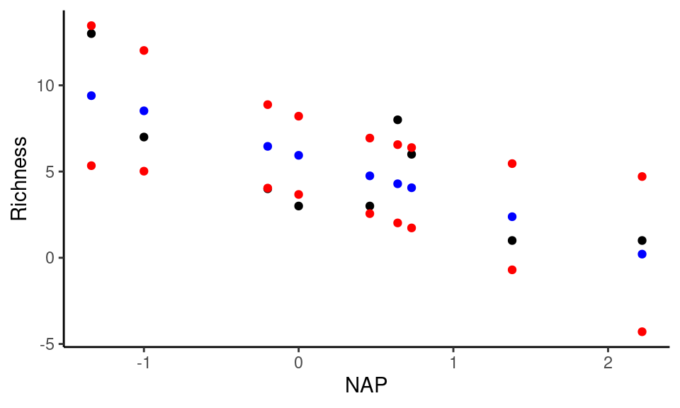
Note que na figura acima, estão representados os valores observados de riqueza de espécies (em preto), os valores ajustados (azul) e os intervalos a 95% (vermelho). Os valores ajustados são aqueles utilizados para construir a reta de regressão. O intervalo não costuma ser representados por pontos individuais, mas por uma banda que delimita a área que restringe o intervalo de confiança ao nível \(1 - \alpha\) como na figura abaixo.
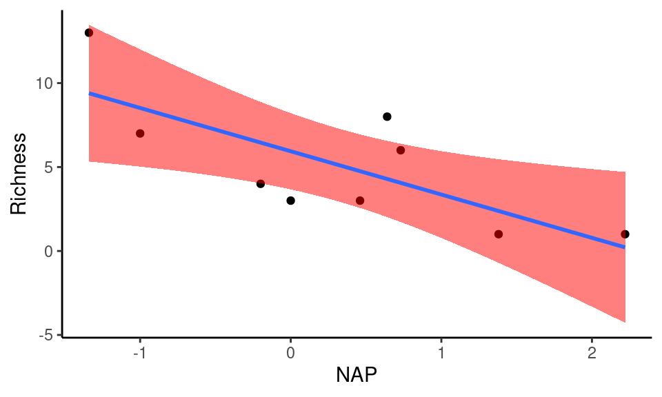
A banda mais estreita próxima ao ponto médio de \(X\), reflete o ponto comentado anteriormente, de que quanto mais próximo ao centro da distibuição de pontos, mais confiança temos sobre os limites máximos e mínimos que um valor de \(Y\) pode assumir. Do mesmo modo, esta confiança diminui à medida que nos aproximamos dos extremos dos valores observados em \(X\).
2.6 Pressupostos da regressão linear simples
Ao realizar uma regressão linear simples, devemos assumir como verdadeiros alguns pressupostos.
- O modelo linear descreve adequadamente a relação funcional entre \(X\) e \(Y\);
- Cada par de observação \((X,Y)\) é independente dos demais;
- A variável \(X\) é medida sem erros;
- Os resíduos têm distribuição normal, e;
- A variância residual \(\sigma^2\) é constante ao longo dos valores de \(X\).
2.6.1 Relação funcional linear
Caso a relação funcional entre \(X\) e \(Y\) assuma uma forma diferente de \(Y_i = \beta_0 + \beta_1X_i\), o modelo de regressão não é mais válido, pois a estimativa de erro irá conter, além do componente aleatório residual, um componente sistemático. Este componente terá efeito sobre influência sobre a predição do modelo, sobretudo nos extremos das observações. Por modelo linear, entendemos aqueles em que os coeficientes \(\beta\) aparecem de forma aditiva. Modelos em que os componentes aparecem de outro modo na equação como potência ou no denominador de uma equação são exemplos de modelos não-lineares. Abaixo estão dois exemplos de relações não-lineares comumente observadas em fenômenos ambientais:
Equação potência: \(Y_i = \beta_0 X_i^{\beta_1}\)
Modelo de Michaelis-Menten: \(Y_i = \frac{\beta_0 X_i}{\beta_1 + X_i}\)
2.6.2 Independência
A falta de independência pode ocorrer como resultado do delineamento amostral inapropriado para a questão em teste. A falta de independência torna crítico o uso de uma distribuição de probabilidade para o cálculo do intervalo de confiança (distribuição \(t\)) e para o teste de hipóteses (distribuições \(t\) e \(F\) ). Casos clássicos de falta de independência são aqueles em que as observações são denominadas como pseudoréplicas (Hurlbert 1984). Após a publicação clássica de Hurlbert, muito tem sido dito sobre pseudoreplicação. Em experimentos de campo, a falta de independência ocorre geralmente como resultados da proximidade espacial entre as réplicas ou sobre séries temporais.
2.6.3 Variável \(X\) é medida sem erros
Veja que a parcela residual do modelo de regressão se refere à distância vertical de \(Y_i\), para um dados valor de \(X\). Isto implica que os níveis de \(X\) são previamente definidos. Quando existe variabilidade aleatória tanto em \(Y\) quanto em \(X\), o modelo correto para a estimativa dos parâmetros da regressão é conhecido como Modelo II de regressão. Este pressuposto é frequêntemente ignorado em delineamentos de regressão, sobretudo em estudos observacionais, o que não parece ser particularmente problemático.
2.6.4 Distribuição normal dos resíduos
Assim como no pressuposto de independência, assumir que os resíduos têm uma distribuição normal permite o uso da distribuição \(F\) pra o teste de hipótese e da distribuiçãio \(t\) para o cálculo do intervalo de confiança. Uma distribuição de erros diferente da distribuição normal terá influência sobre o cálculo da amplitude do intervalo de confiança.
2.6.5 Variância residual constante
Caso, a variância \(\sigma\) não seja constante ao longo da reta de regressão, o cálculo do intervalo de confiança e o resultado do teste de hipóteses são afetados. Uma vez diagnosticada uma variância não-constante existem modelos de regressão que podem ser apicados para incorporar este efeito em suas estimativas (Zuur et al. 2009).
2.7 Diagnósticos da regressão
O diagnóstivo da regressão é composto por observações e testes que ajudam a decidirmos se a regressão linear foi um bom modelo para ajustar a um conjunto de dados particular. Um bom modelo neste contexto significa um modelo que atendeu aos pressuostos descritos acima. Esta verificação passa pela observação de padrões nos resíduos da regressão, ou seja, pela observação da parcela estocástica do modelo.
2.7.1 Gráfico de resíduos
O primeiro diagnóstico da regressão é conhecido como gráfico de resíduos, que consiste em um gráfico de dispersão entre os resíduos e o valor ajustado \(\hat{Y}\). Abaixo estão os gráficos de resíduos que surge quando ajustamos uma reta a dados que apresentam uma relação linear, uma função potência, uma função assintótica e uma relação linear porém comm variância heterogênea.
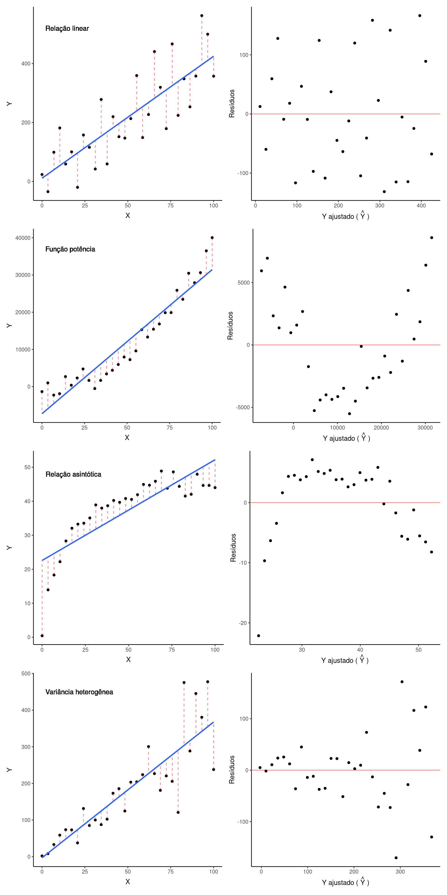
Nas primeiras duas figuras, em que a relação é linear, vemos um padrão crescente de \(Y\) como função de \(X\) (figura da esquerda), em que os pontos estão aleatóriamente acima e abaixo da reta de regressão. Este padrão se reflete em um gráfico de resíduos (figura da direita) em que os pontos ficam aleatóriamente acima e abaixo de zero expressando resíduos positivos e negativos respectivamente. Em uma situação em que os pontos estivessem perfeitamente sobre a reta, os resíduos seriam todos iguais a zero e o gráfico de resíduos mostraria todos os pontos alinhados horizontalmente em zero.
Quando a relação é potência e tentamos ajustar uma reta sobre, vemos que inicialmente os resíduos sao positivos, o seja, estão acima da reta. Os resíduos se tornam negativos no centro da nuvem de pontos e novamente positivos ao final do gráfico. Este padrão é mais evidente no gráfico de resíduos, que mostra um componente sistemático dos resíduos como fução do valor ajustado. Ao usar uma regressão linear neste caso, iríamos subestimar consistentemente os valores de Y nos extremos da figura e superestimlá-los no trecho central. Portanto, uma reta de regressão, quando ajustada a um conjunto de dados que expressa um padrão não-linear, não é capaz de isolar adequadamente as parcelas aleatórias e sistemáticas da relação entre \(Y\) e \(X\). Isto pode ser corrigido aplicando-se uma regressão não-linear aos dados.
Quando a relação é assintótica, o resultado do ajuste foi inverso ao anterior. De fato, resultados análogos serão observados senpre que tentarmos ajustra uma regressão linear a dados que expressam padrões não-lineares.
No último exemplo (variância heterogênea) os pontos tendem a se afastar consistentemente da reta de regressão conforme aumentam os valores de \(X\). Isto denota que o pressuposto de variância \(\sigma^2\) constante não é válido nesta relação. Isto pode ser corrigido aplicando-se um modelo de regressão linear com variância heterogênea.
2.7.2 Histograma dos resíduos
Outro diagnóstico da regressão consiste em fazer um histograma dos gráficos de resíduos. Um histograma, aproximadamente simétrico ao redor de zero o que sugere que o pressuposto de normalidade dos resíduos é válido neste caso. Existem testes formais de normalidade cmo o teste de Kolmogorov Smirnov ou o teste de Shapiro-Wilk.
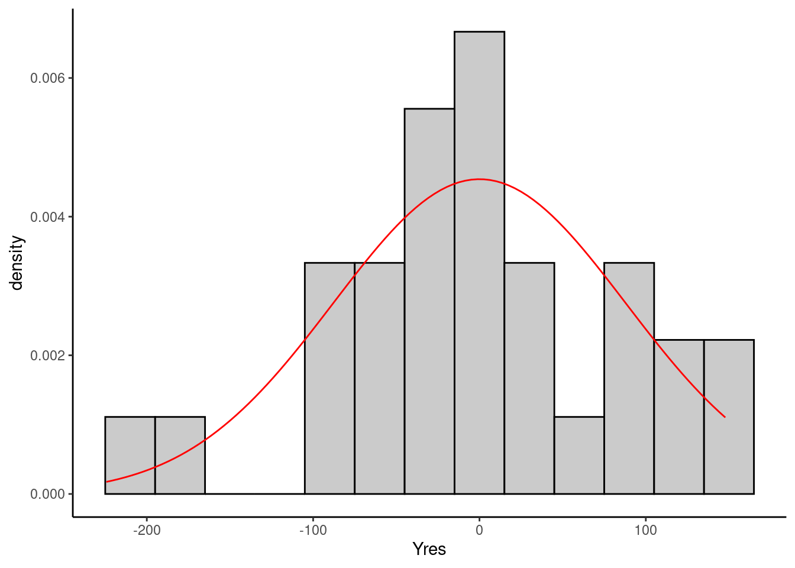
Efron, B. 1998. “R. A. Fisher in the 21st Century. Invited Paper Presented at the 1996 Ra Fisher Lecture.” Statistical Science 13 (2): 95–122.
Halt, A. 1998. “A History of Mathematical Statistics.” Wiley, New York.
Hurlbert, Stuart H. 1984. “Pseudoreplication and the Design of Ecological Field Experiments.” Ecological Monographs 54 (2): 187–211.
Zuur, Alain, Elena N Ieno, Neil Walker, Anatoly A Saveliev, and Graham M Smith. 2009. Mixed Effects Models and Extensions in Ecology with r. Springer Science & Business Media.